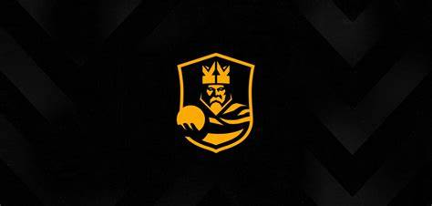

Home Page
Le 7 Regole Principali
Queste sono le 7 regole base, per il regolamento completo utilizzare il link: Regolamento Kings Completo
- 1 Regola: In caso di parità al termine del match, il risultato finale verrà determinato attraverso una modalità di gioco alternativa rispetto ai classici calci di rigore.
- 2 Regola: Fuorigioco
- 3 Regola: Rimesse laterali
- 4 regola: Sostituzioni dei giocatori
- 5 regola: Ammonizioni ed espulsioni: come funzionano i cartellini gialli e rossi nella Kings League.
- 6 regola: Kings League: Il fischio d’inizio come la pallanuoto
- 7 regola: Il formato della competizione prevede 11 giornate che si giocheranno il lunedi, con sei partite consecutive giocate nel pomeriggio. Si tratta di partite di calcio a 7 della durata ridotta di 40 minuti, che avranno nuove regole con l’obiettivo di offrire spettacolo. Le otto meglio classificate al termine della competizione giocheranno i playoff